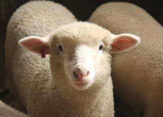

Do your plans for increased self-sufficiency include the addition of a small flock of sheep for fresh, wholesome milk, heart-healthy meat and warm wool for fabrics? Great idea! They’re a fantastic, multipurpose animal. If you’re wondering how to get started, we’re here to help. We asked Sarah Hoffmann of Green Dirt Farm to discuss the baaaaasics of raising sheep.
What is the most important consideration to address when determining if sheep are right for you and your lifestyle?
I think it’s a toss-up between whether you have the facilities to support sheep production, and whether you have the time.
How much time are we talking about?
You will need to manage grazing, attend to their water and minerals daily (though automatic waterers can free up some time), organize breeding, provide routine treatments and arrange for shearing (if you have wool sheep).
What do they need in terms of facilities?
A good fence is a must, though these do not need to be permanent fences - you can use portable electrified netting for grazing (a good source for this is Premier1Supplies). For sheep management (such as vaccinations, treatments, loading for transportation, sorting, separating and lambing), two stout, permanently fenced paddocks are very helpful.
And shelter?
If you time lambing to occur in late April or May, you will not need a barn. But if you lamb earlier in the year and you live in a cold climate you will need a draft-free barn to provide shelter for the lambs during the first 12 to 72 hours after birth (and for the shepherd, who may be called upon to assist for a small percentage of the births). A rough guide for how much pasture is required is 1 acre per every four ewes and their lambs.
Some great resources to assist you in breeding, lambing and caring for growing lambs include the Maryland Small Ruminant Web site, Sheep and Goat Medicine by D.G. Pugh, and Managing Your Ewe and Her Newborn Lambs and Lamb Problems: Detecting, Diagnosing, Treating by Laura Lawson.
Which breeds are best for milking? Which for meat? Which for wool?
The traditional European dairy breeds are the east freisian, and Lacaune. They are considered the best sheep for milk production in the United States. There are a number of other dairy sheep that are not found in the United States, such as the awassi, the assaf and the British milk sheep. Many sheep dairy producers in the United States are milking other breeds that are cross-bred with the east freisian and Lacaune, especially the Dorset, Tunis and polypay. Some individuals have described good success milking Icelandic sheep.
The meat breeds include Katahdin (a hair sheep, so it does not require shearing), Texel, Tunis, polypay, dorper (another hair sheep) montadale, Suffolk and Hampshire.
The breeds considered best for wool include Romney, merino, Columbia, Lincoln, Border Leicester, Rambouillet and Cotswold.
There are many other breeds, including dual purpose sheep such as Corriedale and Columbia, which are known for both meat and wool production. Heritage and rare breeds also are an option, such as Gulf Coast sheep (a rare breed famous for their parasite resistance).
What do you feed them?
Our ewes are about 95 percent grass-fed. However, in winter we do feed the ewes a grain supplement (approximately 0.5 to 1 pound/ewe, depending on the quality of our hay) along with their high-quality legume hay or stockpiled standing forage, beginning when they are about four weeks from lambing and continuing until the spring grass is up.
Our lambs are 100 percent grass-fed - other than their mother’s milk they eat only grass or legume forages nine months of the year. Winter feed is high quality hay or stockpiled standing forage (pasture that has been allowed to grow from August 1 through the fall, then grazed in strips during the winter).
Milk sheep and wool sheep have higher nutritional requirements than meat sheep. However, it is possible to give them the very high quality nutrition that they need using management intensive grazing practices. The Stockman Grass Farmer is a great resource for learning more about this method. If you don’t use this grazing method, you may need to provide milk and wool sheep with a small amount of grain supplement year round.
Sheep, like all classes of livestock, require free access to salt and mineral supplements and plenty of fresh, clean water to maintain good health.
I hear that meat and milk products from grass-fed sheep are growing in popularity. Why?
Grass-fed meat benefits the environment by avoiding concentrated manure that can pollute waterways, by protecting and nurturing grass plants that help to sequester carbon, and by limiting or avoiding grain feeding of animals that can increase pollution problems through the concentrated application of chemicals to grow those grains. Grass-fed meat benefits the animals by providing them with the nutrition that their bodies evolved to best utilize. All of these reasons make grass-fed meats “healthy for us.”
In addition, grass-fed meat benefits us humans because 100-percent grass feeding of ruminant animals gives their meat much higher concentrations of good, heart-healthy fatty acids, such as omega 3s. The meat also tends to be higher in concentrations of naturally occurring vitamins and minerals, and higher in conjugated linoleic acid, which has been shown to have protective effects against cancer and some autoimmune diseases. A good resource for more information about grass-fed meat is Eatwild.com.
Sheep’s milk is higher in butter fat, protein and minerals than cow or goat milk. In fact, nearly all the milk components are present in higher concentrations in sheep milk. It is very rich and sweet. (Each state has different regulations regarding whether the milk must be pasteurized and where and when it can be sold. The federal regulation regarding pasteurization requires that all raw milk cheeses must be aged a minimum of 60 days before they can be sold.)
What’s the best way to start marketing sheep products?
The first thing I would do is find a good meat processor that is close to my farm. Then I would visit some of the local farmers markets and talk with the vendors there to see which market is a good fit for you. Check with your state’s agriculture and health departments to find out what regulations and permits you might need in order to sell at farmers markets. Nationwide shipping through a Web site is a good marketing tool, but it’s a good idea to first develop a local customer base, and farmers markets are the best place for that.
What characteristics should I look for when purchasing sheep?
If possible, get an experienced person to help you select your sheep. Look for sheep that are bright and active. Look at the entire flock that belongs to your breeder. Choose a reputable, honest breeder - it is a very bad idea to buy your starter flock at an auction barn. You may get very inexpensive sheep but you will also likely be bringing home problems and diseases. Also, ask your breeder about how they protect against the prevalent sheep diseases, what they have done to prevent infections, and how they have managed any disease outbreaks.) Ask them if their sheep have, or have been exposed to, diseases such as caseous lymphadenitis, ovine progressive pneumonia, Johnes disease, foot rot and scrapie.
How do I protect my new flock from predators? Do I need a herding dog?
Coyotes and domesticated roaming dog packs are the worst predators that we encounter on our farm. We have three livestock guardian dogs (Anatolian Shepherds and Great Pyrenees) and two llamas, as well as electric fence to deter predators. Donkeys and mules also are excellent protectors, and because they’re grazing animals, they’re quite low-maintenance.
Someone with only a handful of sheep will not need a herding dog, though they are a lot of fun to train and watch work. A small group of sheep can be readily taught to follow a person with a handful of grain and will move readily for you without a dog. When you get larger numbers of sheep (more than 15 or so), a herding dog becomes indispensable.
Keep in mind that there’s a difference between guard dogs and herders, and select according to your needs. Be sure to choose one that has been specifically bred to work with sheep, or you may be sorry. It’s a good idea to watch their parents at work before investing.
Additional Resources:
Pipestone Veterinary Supply: A good source for vaccines, antibiotics, lambing supplies, dewormers and other supplies to maintain health
Raising Sheep the Modern Way, by Paula Simmons. A small-scale sheep raiser guide to breeding, pregnancy, medication, vaccines and new products.
Hand-crafted Homestead, a Firsthand Report from Betsy Erickson about life on a sheep farm.
|
 LINDA KLOOSTERHOF Consider raising sheep for a more self-sufficient homestead. |
|
|